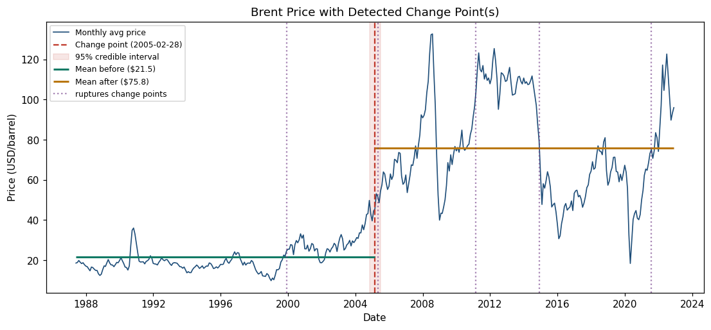
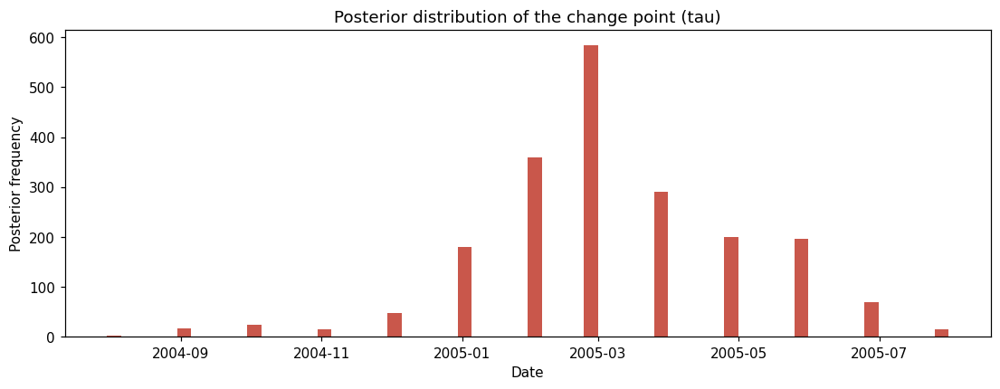
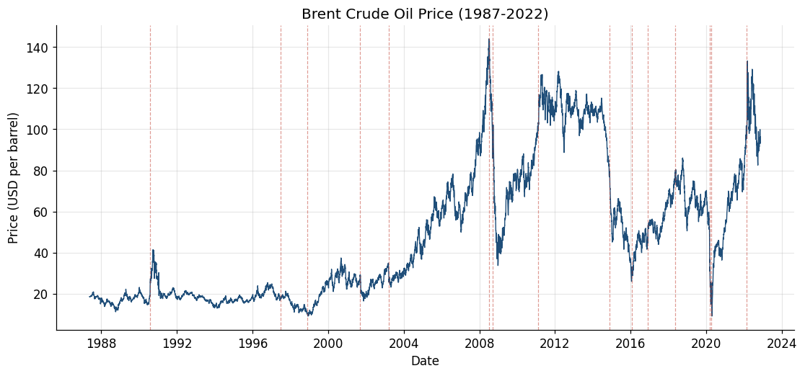
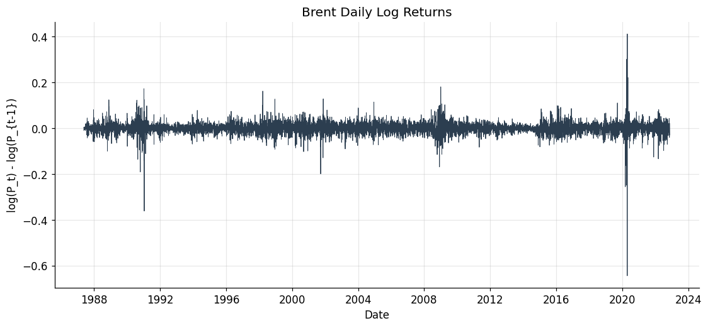
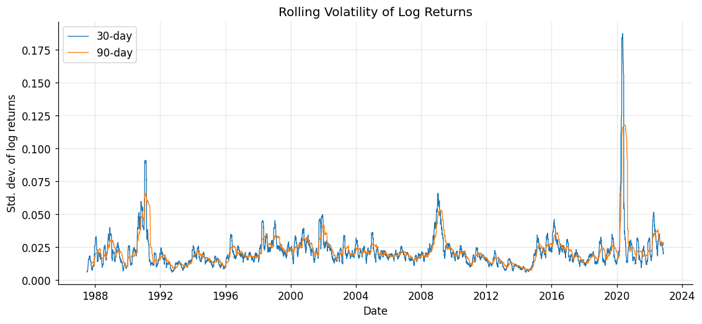
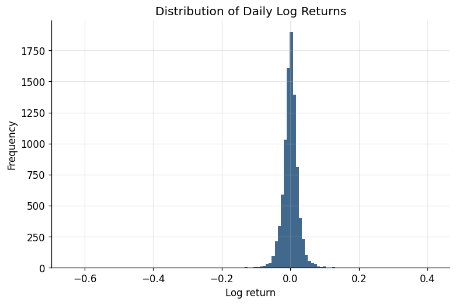
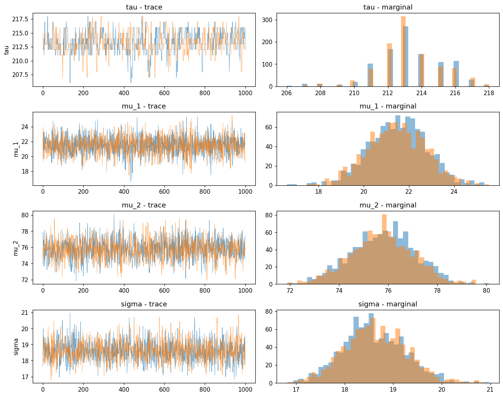

The business problem
Oil prices jump for reasons that look obvious in hindsight and chaotic in the moment. At Birhan Energies, the brief was clear: identify when Brent’s statistical behaviour changed, measure how large those shifts were, and connect them to real-world events — without pretending correlation is causation.
Headline findings
Loading…


Interactive exploration
Monthly Brent prices with curated events (dashed red), multi-break candidates from
ruptures (teal), and the Bayesian switch point (amber). Filter by event category.
Brent price & structural markers
Amber = Bayesian τ · Teal = ruptures multi-breaks · Red dashed = curated events
Event impact (±90 days)
Percent change in average price around each event
Volatility clustering
30-day rolling std. of daily log returns
Event impacts in detail
For each curated event, compare average price in the 90 days before vs after. Large moves often align with wars, OPEC decisions, and demand shocks — but timing can lead or lag the “official” date as markets anticipate news.
| Date | Event | Category | Price before → after | Change |
|---|
Curated event timeline
| Date | Event | Category | Description |
|---|
What the raw series taught us
Before modeling, EDA showed a non-stationary price level, stationary log returns, heavy tails, and clear volatility clustering — which is why the Bayesian model targets regime means (with log-return diagnostics) rather than treating the whole history as one homogeneous process.




How the analysis works
End-to-end pipeline from messy CSV dates to posterior impact statements and a live dashboard.
Clean & transform
Parse mixed date formats, dedupe, sort, compute log prices and log returns.
EDA & stationarity
Trend, ADF tests, volatility clustering — inform the modeling target.
Bayesian change point (PyMC)
Discrete uniform prior on τ; μ₁ / μ₂ selected with pm.math.switch;
Normal likelihood; MCMC via pm.sample(); check r̂ and traces.
Multi-break complement
ruptures Binseg finds additional regime dates beyond a single τ.
Event association & communication
Compare τ and ruptures dates to curated events; quantify ±90-day impacts; report + dashboard.

Assumptions & limitations
A change point near an event is a temporal association, not proof of causation. Markets anticipate news, events cluster (e.g. COVID + OPEC+ price war in 2020), and unobserved drivers (inventories, FX, speculation) remain outside the model.
What’s in the repo
Production-minded project layout: reusable src/, tests, Flask API,
React dashboard, notebooks, and this static portfolio site.